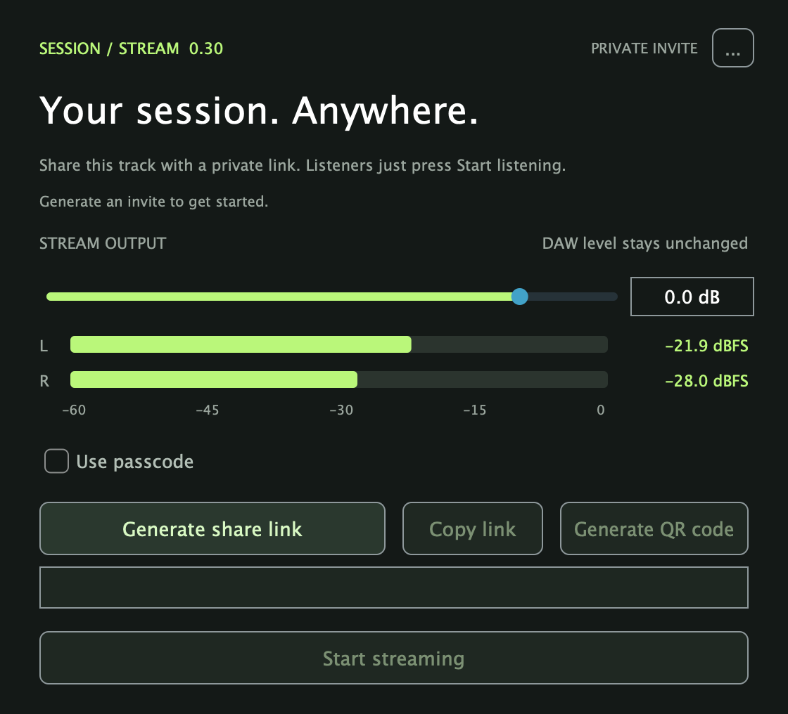
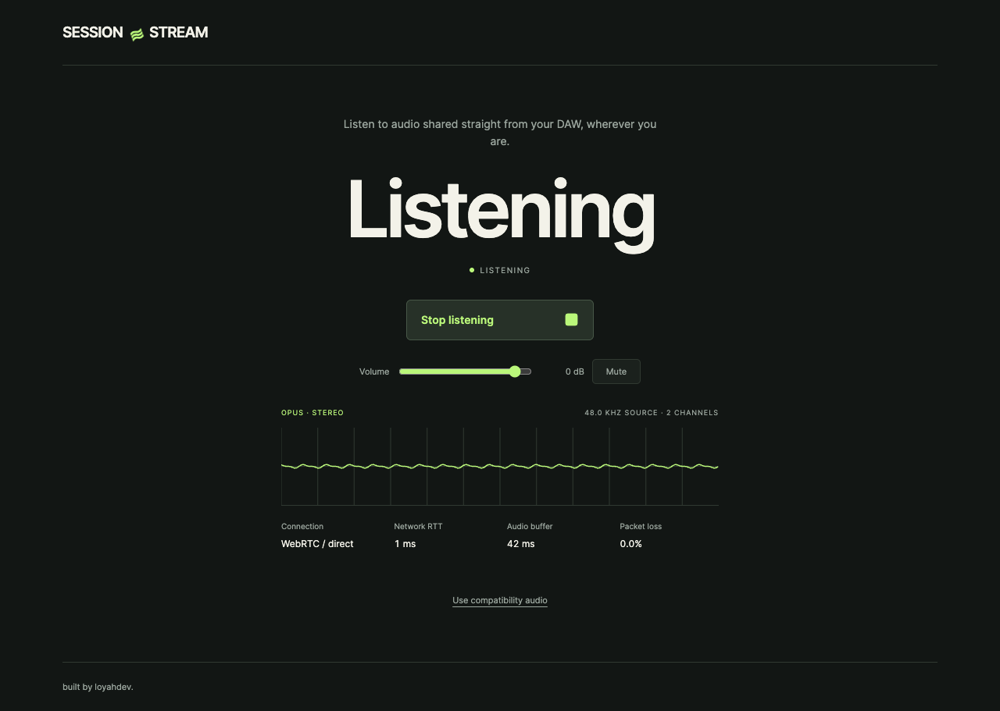

Live audio sharing
from your DAW.
SessionStream sends stereo audio from your DAW to a browser.
Use it for mix feedback, remote lessons, or listening on another device.


Animated illustration
Free to download and use. No subscription.
macOS 13.5+ (Apple Silicon) · Windows 11 (x64 / ARM64)
How to share
your session audio.
Choose your audio.
Add the plugin to a track or your master bus.
Generate a link.
Generate a share link, start streaming, and send the invite.
Start listening.
Your listener opens the link and presses Start listening.
What SessionStream does
Add the plugin to a single track or your master bus. It streams a copy of the audio without changing your DAW output.
- Mix reviewsShare playback and let collaborators hear your changes.
- Remote lessonsSend session audio to a student’s browser.
- Another listening deviceOpen the invite on a second device to check your mix.
- Live stereo
- WebRTC audio using Opus at 48 kHz, with a requested bitrate of 320 kbps.
- Browser listening
- Listeners open a link and press Start listening. No listener account, plugin, or download.
- Up to eight listeners
- Share an invite with optional passcode protection. A new invite invalidates the previous one.
- Separate stream level
- Adjust the outgoing audio level without changing your track or master level.
Close your DAW before installing, then reopen it. Installers are unsigned. Installation instructions ↗
Experimental release
Session links use temporary Cloudflare Quick Tunnels, with no uptime guarantee. Latency and reliability depend on the connection; testing is still in progress. Read the validation notes ↗
Built by loyahdev ↗
SessionStream is an independent project. The plugin, streaming engine, and browser listener are all in the repository under AGPL-3.0.
Found a bug or tried it in your DAW? Open an issue with your setup and what happened.